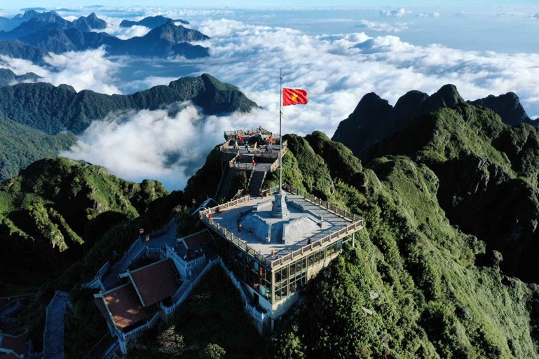
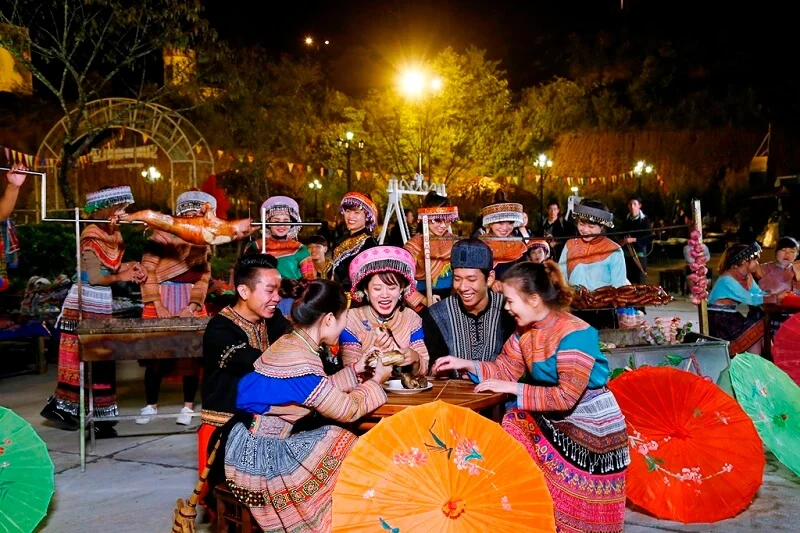

Nóc nhà Đông Dương – chạm tay vào biển mây
Fansipan cao 3.143m, là biểu tượng du lịch của Sapa và toàn vùng Tây Bắc. Từ đỉnh núi, bạn có thể phóng tầm mắt ra biển mây bồng bềnh và dãy Hoàng Liên Sơn hùng vĩ. Hiện nay, hệ thống cáp treo hiện đại giúp hành trình chinh phục trở nên dễ dàng hơn bao giờ hết.
Thời điểm đẹp nhất để ghé thăm là từ tháng 9 đến tháng 4, khi trời trong và dễ săn mây. Nhiệt độ trên đỉnh khá thấp nên hãy chuẩn bị áo ấm để có trải nghiệm trọn vẹn.

Vẻ đẹp mộc mạc của làng dân tộc H’Mông
Bản Cát Cát nằm cách trung tâm Sapa không xa, nổi bật với những nếp nhà gỗ đơn sơ, ruộng bậc thang và thác nước tự nhiên. Đây là nơi lý tưởng để tìm hiểu văn hóa, phong tục và cuộc sống thường ngày của người dân tộc H’Mông.
Du khách có thể thuê trang phục truyền thống để chụp ảnh, thưởng thức đặc sản địa phương và tham gia các hoạt động văn hóa đặc sắc.

Ruộng bậc thang đẹp nhất Tây Bắc
Thung lũng Mường Hoa nổi tiếng với những thửa ruộng bậc thang trải dài uốn lượn theo sườn núi. Vào mùa lúa chín (tháng 9–10), cả thung lũng khoác lên mình màu vàng óng tuyệt đẹp.
Ngoài ra, nơi đây còn có bãi đá cổ với nhiều hình khắc bí ẩn, thu hút du khách yêu thích khám phá và nghiên cứu.
Biểu tượng cổ kính giữa lòng thị trấn
Nhà thờ đá Sapa được xây dựng từ thời Pháp thuộc, mang kiến trúc cổ kính và nằm ngay trung tâm thị trấn. Đây là địa điểm quen thuộc của du khách khi đến Sapa.
Vào buổi tối, khu vực xung quanh nhà thờ trở nên nhộn nhịp với các hoạt động văn hóa và chợ đêm, tạo nên không khí rất đặc trưng của vùng núi.